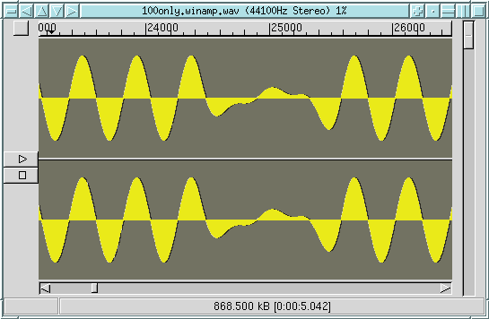
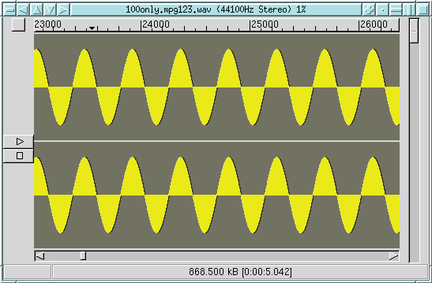
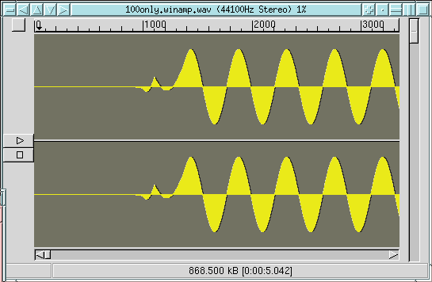
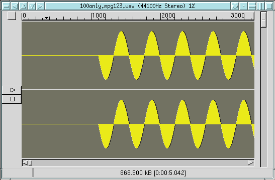

It was caused by assuming that the Huffman "big_values" data is at most
8191 (2^13 -1). 13 bits are used to encode these numbers, but in some cases
during decoding you need to add 15 to the result. Thus the effective
range is 0 through
8206. However, the ISO MP3 spec says that the maximum value should
be 8191, and it is not clear if they are refering to the maximum value
before or after adding the 15, and the ISO demonstration source (dist10)
uses values up to 8206. Imposing a maximum value of 8191 is
a completely unneeded restriction which results in a (very tiny) loss of
quality.
The 8191/8206 issue was first described by Rob Leslie, author of the MAD decoder. It was placed on the todo list to decide if LAME should use values up to 8206 or limit them to 8191. It took several months for us to realize that this issue was triggering the "Winamp bug".
Developers for Winamp and Sonique have already produced versions of their software which can decode 100only.mp3. So this should be fixed in the releases dated after 10/2/00.
LAME 3.88 will either be set to not encode big_values greater than 8191,
or this limit will be enforced if the "--strictly-enforce-ISO" option
is used.
The LAME project often receives reports of this bug. The problem seems to be that the LAME produced mp3 files of simple harmonics like the pure 100Hz tone shown below is decoded incorrectly with Winamp/Nitrane. Testing shows that this is in fact not a bug in the LAME produced mp3 file, but a bug in the Nitrane decoding engine used by Winamp.
The followin players will decode the MP3 file with no problems: mpg123, xmms, freeamp (Xing engine), musicmatch jukebox, windows media player, sonique 1.30.4, UltraPlayer 1.0.
More evidence of bugs in Nitrane can be found in Matthew Loyd's post in the mp3encoder mailing list.
Naoki Shibata has also documented some bugs in Nitrane, and has produced a Winamp decoder plugin based on mpg123. This plugin replaces Nitrane. See Naoki's web site.
Even more MP3 decoder bugs can be found at MP3 Player Quality Comparson Site. and MP3 decoder tests. Both sites document severe flaws in several popular decoders.
Test samples:
100only.wav
A pure 100 Hz sine wave
100only.mp3
Encoded with "lame -h"
sweep.wav
A sine wav sweep from 20Hz-20,000Hz
sweep.mp3
Encoded with "lame -h"

And here is the same picture, only using mpg123 to decode the mp3 file:
(similar correct results are obtained with other decoders such as MusicMatch
and Sonique)

Here is the .wav file produced by Nitrane, from 100only.mp3, at time
0: (note that all encoders and decoders introduce a delay,
in this case around 1000 samples)

And here is the .wav file produced my mpg123, from 100only.mp3, at time
0.
